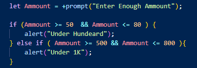

যখন কোন কাজ করার জন্য ২ এর মধ্যে ২ খানা শর্তই পুরন করতে হয় তখন ( && ) And operator ব্যেবহার করা হয় ।
যেমন কোন dynamic website এ প্রবেশ করতে গেলে lig in করতে হয় আর login করার জন্য দরকার username এবং password উভয়কেই একদম সঠিক , এদের মধ্যের যেকোনো একটা ভুল বা false হলে কিন্তু ঐ profile এ access দেওয়া হবে না ।
অর্থাৎ এই operator এর উভয় operand ই true হতে হবে তাহলেই আর তাহলেই operator retrun করবে true ।
operand1 operand2 এর মধ্যে 2টাই true হলে
retrun = true ।
And operator প্রথমে operand গুলুকে boolean এ কনভার্ট করে ।
and operator সাধারণত if else condition এ ব্যেবহার করা হয় ।
মাঝে মাঝে rang নিয়ে কাজ করার দরকার পরে ।
যেমন যদি ভ্যালুটা 50 থেকে 80 এর মধ্যে হয় তাহলে (Under Hundeard)-এটা দেখাও ।
বা যদি ভ্যালুটা 500 থেকে 800 এর মধ্যে হয় তাহলে (under 1k)-এটা দেখাও ।
তখন এই rang related কাজ গুল করার জন্য && and operator ব্যেবহার করতে হবে ।
Ex:- Js line 14
